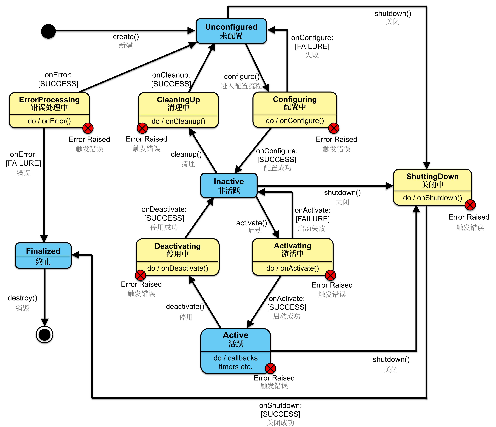
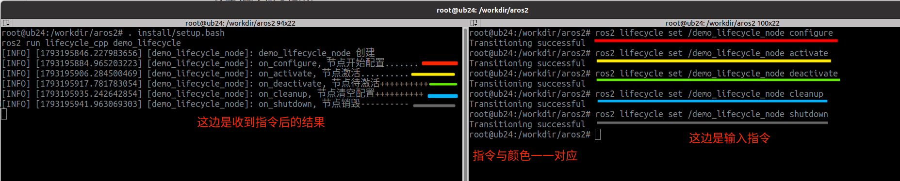

生命周期节点
1. 简介
1.1场景
在机器人运行时，需要根据任务需求动态激活或停用某些功能模块（如摄像头、激光雷达），以节省计算资源或能量损失。那么应该怎样实现呢？
在 ROS2 中提供了生命周期节点以实现上述功能。生命周期节点是一种特殊的节点，它在标准节点的基础上增加了一组预定义的状态和状态转换，使得节点能够更加可靠和可管理。
1.2 概念
生命周期节点是 ROS2 独有的。它是包含状态和转换的节点，用于 ROS2 服务的启动和关闭。这有助于 ROS 系统在启动和关闭时的确定性行为。
生命周期节点基于一个有限状态机，建议的节点生命周期状态机包括四个主要状态：
未配置（Unconfigured）：
节点初始状态。在此状态下，节点尚未完成初始化。
活跃（Active）：
节点正在活跃运行。在这一状态下，节点已完全激活并执行其主要功能。
非活跃（Inactive）：
节点未在活跃执行。这是从激活状态暂停到的状态，可用于临时暂停节点活动。
终止（Finalized）：
节点生命周期的终止状态。
有六个过渡状态，这些状态是在请求转换期间的中间状态：
- 配置中（Configuring）
- 激活中（Activating）
- 停用中（Deactivating）
- 关闭中（ShuttingDown）
- 清理中（CleaningUp）
- 错误处理中（ErrorProcessing）

其工作流程如下：
从节点的创建开始，此时节点处于未配置状态。在配置阶段，节点加载所需的设置和资源，成功后转移到非活跃状态。在非活跃状态，节点不执行任务，但可以安全地进行调整或重新配置，以备后续活动。当节点被激活时，它进入活跃状态，此时它开始处理数据、响应服务请求，并执行核心功能。如果在活跃状态中遇到无法内部解决的问题，节点将转入错误处理状态，在这里尝试恢复到稳定状态。节点的生命周期可通过优雅的关闭过程进入终结状态，之后节点被销毁。
1.3 作用
提供对节点状态的精确控制，确保节点按照预设的安全和可靠的方式运行。通过定义一系列状态和状态之间的转换，管理框架允许系统在节点初始化、激活、运行及关闭过程中进行详细监控和控制。这不仅增强了系统的稳定性和响应能力，而且通过状态管理简化了故障诊断和恢复过程，使得在发生错误时可以快速准确地回退到安全状态或重新配置，极大地提高了机器人系统的可维护性和可扩展性。此外，生命周期管理还支持系统的动态调整和资源优化，为复杂的机器人应用提供了必要的灵活性和效率。
2. 案例以及案例分析
2.1 案例需求
需求：编写一个ROS2的lifecycle Node，在终端中进行生命周期节点的切换。
2.2 流程简介
主要步骤如下：
- 编写源文件；
- 编译；
- 执行。
案例我们会采用C++和Python分别实现，二者都遵循上述实现流程。
2.3 准备工作
终端下进入工作空间的src目录，调用如下两条命令分别创建C++功能包和Python功能包。
ros2 pkg create lifecycle_cpp --build-type ament_cmake --dependencies rclcpp rclcpp_lifecycle --node-name demo_lifecycle
ros2 pkg create lifecycle_py --build-type ament_python --dependencies rclpy --node-name demo_lifecycle_py
3. 生命周期节点之C++实现
3.1 编写源文件
功能包lifecycle_cpp的src目录下，新建C++文件demo_lifecycle.cpp，并编辑文件，输入如下内容：
//运行指令： ros2 run lifecycle_cpp demo_lifecycle
/*
需求：编写一个ROS2的lifecycle Node, 并执行。
流程：
1.包含头文件；
2.初始ROS2客户端；
3.创建一个生命周期节点类；
4.执行生命周期节点对象；
5.释放资源；
*/
// 1.包含头文件；
#include "rclcpp/rclcpp.hpp"
#include "rclcpp_lifecycle/lifecycle_node.hpp"
using CallbackReturn = rclcpp_lifecycle::node_interfaces::LifecycleNodeInterface::CallbackReturn;
// 3.创建一个生命周期节点类；
class MyNode: public rclcpp_lifecycle::LifecycleNode{
public:
MyNode():LifecycleNode("demo_lifecycle_node"){
RCLCPP_INFO(this->get_logger(), "demo_lifecycle_node 创建");
}
// 要重写转换过程相关的函数
CallbackReturn on_configure(const rclcpp_lifecycle::State & previous_state){
(void)previous_state;
RCLCPP_INFO(this->get_logger(), "on_configure, 节点开始配置.......");
return CallbackReturn::SUCCESS;
}
CallbackReturn on_activate(const rclcpp_lifecycle::State & previous_state){
(void)previous_state;
RCLCPP_INFO(this->get_logger(), "on_activate, 节点激活..........");
return CallbackReturn::SUCCESS;
}
CallbackReturn on_deactivate(const rclcpp_lifecycle::State & previous_state){
(void)previous_state;
RCLCPP_INFO(this->get_logger(), "on_deactivate, 节点待激活++++++++++");
return CallbackReturn::SUCCESS;
}
CallbackReturn on_cleanup(const rclcpp_lifecycle::State & previous_state){
(void)previous_state;
RCLCPP_INFO(this->get_logger(), "on_cleanup, 节点清空配置++++++++++");
return CallbackReturn::SUCCESS;
}
CallbackReturn on_shutdown(const rclcpp_lifecycle::State & previous_state){
(void)previous_state;
RCLCPP_INFO(this->get_logger(), "on_shutdown, 节点销毁----------");
return CallbackReturn::SUCCESS;
}
};
int main(int argc, char ** argv)
{
// 2.初始ROS2客户端；
rclcpp::init(argc, argv);
// 4.执行生命周期节点对象；
auto mynode = std::make_shared<MyNode>();
// mynode 是生命周期节点，而不是普通节点
rclcpp::spin(mynode->get_node_base_interface());
// 5.释放资源；
rclcpp::shutdown();
}
3.2 编译
终端中进入当前工作空间，编译功能包：
colcon build --packages-select lifecycle_cpp
3.3 执行
当前工作空间下，启动两个终端，终端1执行发布程序，终端2执行订阅程序。
终端1输入如下指令：
. install/setup.bash
ros2 run lifecycle_cpp demo_lifecycle
终端2输入如下指令：
ros2 lifecycle set /demo_lifecycle_node configure
ros2 lifecycle set /demo_lifecycle_node activate
ros2 lifecycle set /demo_lifecycle_node deactivate
ros2 lifecycle set /demo_lifecycle_node cleanup
ros2 lifecycle set /demo_lifecycle_node shutdown
即可实现节点不同状态的转换。

4. 生命周期节点之Python实现
4.1 编写源文件
功能包lifecycle_py的lifecycle_py目录下，新建Python文件demo_lifecycle_py.py，并编辑文件，输入如下内容：
4.2 编译
终端中进入当前工作空间，编译功能包：
colcon build --packages-select lifecycle_py
4.3 执行
当前工作空间下，启动两个终端，终端1执行发布程序，终端2执行订阅程序。
终端1输入如下指令：
. install/setup.bash
ros2 run lifecycle_py demo_lifecycle_py
终端2输入如下指令：
ros2 lifecycle set /demo_lifecycle_py_node configure
ros2 lifecycle set /demo_lifecycle_py_node activate
ros2 lifecycle set /demo_lifecycle_py_node deactivate
ros2 lifecycle set /demo_lifecycle_py_node cleanup
ros2 lifecycle set /demo_lifecycle_py_node shutdown
即可实现节点不同状态的转换。
5. lifecycle命令工具
ros2 lifecycle 用于查看和控制生命周期节点，其基本指令如下：
nodes 输出所有生命周期节点
get 输出指定节点的当前生命周期状态
list 输出指定节点可执行的状态转换
set 请求指定节点执行状态转换
基本语法：
ros2 lifecycle get <节点名称>
ros2 lifecycle list <节点名称>
#常用状态转换如下
ros2 lifecycle set <节点名称> <转换名称>
ros2 lifecycle set 常用状态转换如下：
# unconfigured → inactive
ros2 lifecycle set /demo_lifecycle_node configure
# inactive → active
ros2 lifecycle set /demo_lifecycle_node activate
# active → inactive
ros2 lifecycle set /demo_lifecycle_node deactivate
# inactive → unconfigured
ros2 lifecycle set /demo_lifecycle_node cleanup
# 当前状态 → finalized
ros2 lifecycle set /demo_lifecycle_node shutdown
状态转换与回调函数的对应关系如下：
| 转换名称 | 状态变化 | 调用的回调函数 |
|---|---|---|
configure |
unconfigured → inactive |
on_configure() |
activate |
inactive → active |
on_activate() |
deactivate |
active → inactive |
on_deactivate() |
cleanup |
inactive → unconfigured |
on_cleanup() |
shutdown |
unconfigured/inactive/active → finalized |
on_shutdown() |
set只能执行当前状态允许的转换。可以先使用ros2 lifecycle list <节点名称>查看当前可执行的转换。
6. 小结
在ROS2中，一般节点（普通节点）和生命周期节点（Lifecycle Node）是两种不同的节点管理方式，它们的核心区别在于对节点生命周期的控制程度和自动化能力。以下是两者的关系与区别总结：
核心关系
- 继承关系
- 生命周期节点是普通节点的扩展，继承了普通节点的所有功能（如发布/订阅、服务调用等），并在此基础上增加了状态机管理能力。
- 普通节点是生命周期节点的子集（生命周期节点可退化为普通节点，但反之不成立）。
- 共存性
- 两者可以在同一系统中同时存在，生命周期节点通常用于需要严格资源管理的组件（如传感器驱动、控制……